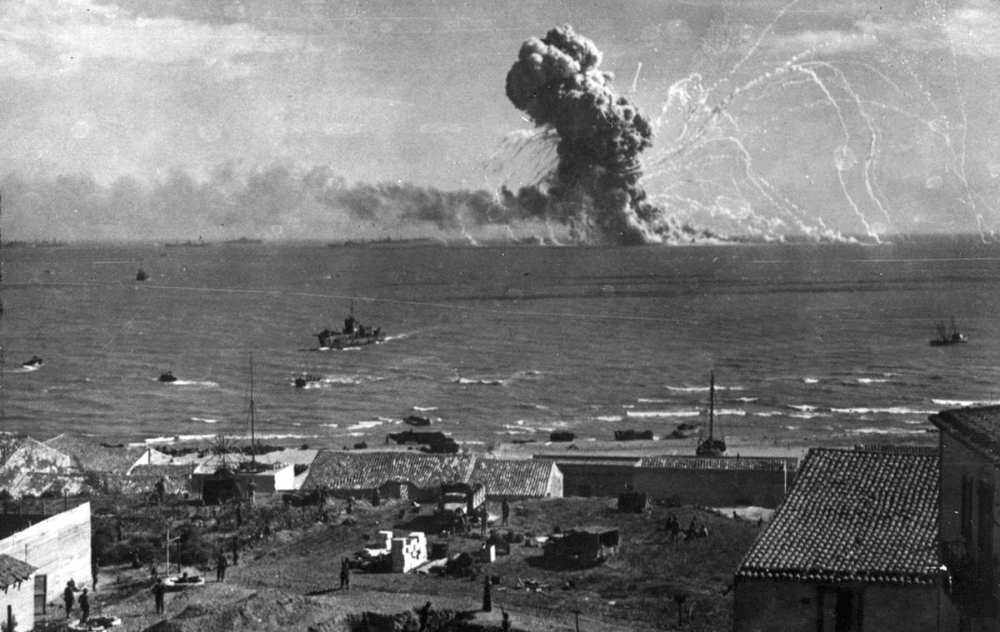

กรกฎาคม 1943 พันธมิตรบุก Sicily
การรุกรานเกาะ Sicily ของฝ่ายสัมพันธมิตร หรือในชื่อรหัสว่า ปฏิบัติการ Husky เป็นหนึ่งในปฏิบัติการหลักในสงครามโลกครั้งที่สองของฝ่ายสัมพันธมิตร เพื่อยึดครองเกาะ Sicily จากฝ่ายอักษะ การรุกครั้งนี้เป็นการปฏิบัติการระดับใหญ่โดยใช้ยานลำเลียงพลสะเทินน้ำสะเทินบกและพลร่มจำนวนมาก และการรบภาคพื้นดินเป็นเวลานานถึง 6 สัปดาห์

สิงหาคม 1943 พันธมิตรยึดครอง Sicily
กองกำลังพันธมิตรได้รับชัยชนะที่เกาะ Sicily ยังมีผลให้ฝ่ายสัมพันธมิตรสามารถควบคุมน่านน้ำทะเลเมดิเตอร์เรเนียน และ Mussolini ต้องถูกขับไล่ให้พ้นจากตำแหน่งนายกรัฐมนตรีอิตาลี ความสำเร็จได้กล่าวได้ปูทางสู่การรุกคืบในอิตาลีแผ่นดินใหญ่ในขั้นต่อไป